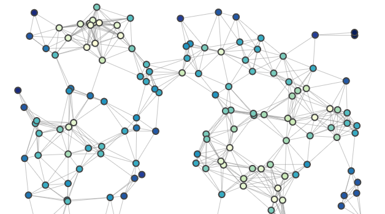
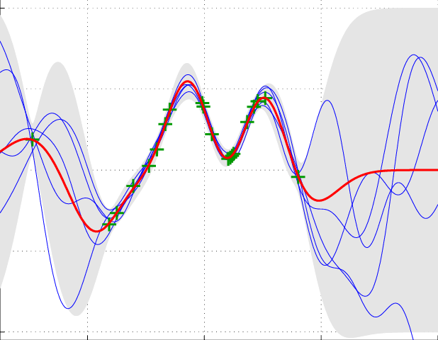

Thermalizer: Stable neural emulation of spatiotemporal chaos
Chaotic dynamical systems are ubiquitous throughout science and engineering, but computationally expensive to model using numerical methods. Deep learning has been used to create fast, approximate models of chaotic systems in the form of autoregressive models, however such models are notoriously unstable over long timescales due to accumulation of errors, limiting practical applicability.
In this work we introduce the thermalizer, a modified diffusion model framework that can be used to stabilise autoregressive rollouts on the fly, extending the time-horizon of stable predictions by orders of magnitude.
Project ongoing...
In this work we introduce the thermalizer, a modified diffusion model framework that can be used to stabilise autoregressive rollouts on the fly, extending the time-horizon of stable predictions by orders of magnitude.
Project ongoing...
Deep learning models of subgrid dynamics
 Modelling the evolution of Earth's climate requires detailed simulations of the oceans and atmosphere. These simulations are extremely computationally expensive, and we are limited by computational resources in the small-scale dynamics that one can resolve. However, turbulence is a notoriously multi-scale phenomena, with small-scale eddies and vorticies affecting the large scale evolution of fluids. Therefore ocean simulations of finite resolution are missing these important effects.
Modelling the evolution of Earth's climate requires detailed simulations of the oceans and atmosphere. These simulations are extremely computationally expensive, and we are limited by computational resources in the small-scale dynamics that one can resolve. However, turbulence is a notoriously multi-scale phenomena, with small-scale eddies and vorticies affecting the large scale evolution of fluids. Therefore ocean simulations of finite resolution are missing these important effects.
In this project we develop coupled physics + deep learning models of turbulent flows, where the machine learning component models the unresolved, subgrid dynamics, enabling accurate, coarse resolution simulations. In particular, we demonstrate how the stability of these coupled models can be improved by augmenting the training procedure with a neural network emulator.
Published at ICML 2023: Synergy of Scientific and Machine Learning Modeling Workshop
Cancer-net

The cost of DNA sequencing has reduced by orders of magnitude over the past few years, enabling the possibility of modelling the progression of cancer tumors as a function of their genetic mutations as more data becomes available. However there are still a unique set of challenges, as this highly protected data is segregated into small groups, making it difficult to train models on long genetic sequences from only a few hundreds of patients.
By grouping genes into subgraphs using biological prior knowledge, and using sparse connections between these graphs, we are building a binary classification model of prostate cancer tumors, which will predict whether or not a tumor is metaststic based on it's genetic markers. The motivation behind the graph network is to enable increased generalisability, and the sparse connections reduce the number of parameters of the model, enabling training on the small datasets available.
Submitted to Nature Machine Intelligence
By grouping genes into subgraphs using biological prior knowledge, and using sparse connections between these graphs, we are building a binary classification model of prostate cancer tumors, which will predict whether or not a tumor is metaststic based on it's genetic markers. The motivation behind the graph network is to enable increased generalisability, and the sparse connections reduce the number of parameters of the model, enabling training on the small datasets available.
Submitted to Nature Machine Intelligence
Learnable wavelet neural networks for cosmological inference
An important part of cosmology is the process of extracting information from the cosmological fields observed by experiments and telescopes. Traditionally, these fields are compressed into summary statistics (the two-point correlation function), and then compared with theory to obtain constraints on physical parameters. However it is known there is information lost in this process. Recent work has shown that convolutional neural networks (CNNs) are able to retain this information, while optimally marginalising over astrophysical nuisance parameters.
CNNs however require notoriously large amounts of data to train, and in the case of cosmological analysis, have to be trained on expensive numerical simulations. Given the limitations of computational resources, there is a strong motivation for designing models that can be trained on smaller amounts of training data. We designed a wavelet-based convolutional neural network, where the first 2 convolutional layers use wavelets instead of the traditional grid filters. The input fields are downsampled by factor of 2 after each convolution, meaning the wavelet layers are effectively performing an efficient compression of the data. The output of the wavelet convolutional layers are passed to a standard CNN of only 3 layers.
This model has an order of magnitude less learnable parameters than a standard CNN, and we show it dramatically outperforms a CNN at inference of cosmological parameters when in the regime of small training set sizes. Additionally, the wavelet filter parameters are included in the gradient descent, and can be used to understand where the information lies in the cosmological fields.
Published at ICML 2022 Machine learning for astronomy workshop
CNNs however require notoriously large amounts of data to train, and in the case of cosmological analysis, have to be trained on expensive numerical simulations. Given the limitations of computational resources, there is a strong motivation for designing models that can be trained on smaller amounts of training data. We designed a wavelet-based convolutional neural network, where the first 2 convolutional layers use wavelets instead of the traditional grid filters. The input fields are downsampled by factor of 2 after each convolution, meaning the wavelet layers are effectively performing an efficient compression of the data. The output of the wavelet convolutional layers are passed to a standard CNN of only 3 layers.
This model has an order of magnitude less learnable parameters than a standard CNN, and we show it dramatically outperforms a CNN at inference of cosmological parameters when in the regime of small training set sizes. Additionally, the wavelet filter parameters are included in the gradient descent, and can be used to understand where the information lies in the cosmological fields.
Published at ICML 2022 Machine learning for astronomy workshop
Compressing cosmological information
The Lyman-alpha forest, a series of absorption features in the spectra of distant quasars, can be used to measure the growth of structure in the early Universe, and on relatively small scales. This regime is particularly significant in constraints on two active areas of cosmological research. One is the effect of neutrino mass on cosmology, where subtle measurements of the growth of structure can be used to determine the mass of the lightest particle in physics. Another is the scale-dependence of the quantum fluctuations seeded at the Big Bang, which can be used to constrain models of fundamental physics.
Whilst this information is extremely valuable, analysis of the Lyman-alpha forest is a highly complicated task, requiring expensive hydrodynamical simulations, and marginalisation over uncertain astrophysical effects which the absorption features we observe also depend on. Only a small number of groups have the expertise and scope required to perform this analysis. As a result of these obstacles, results from the Lyman-alpha forest are underutilised in the joint analysis of cosmological observations. In this work, we tackle this problem by showing that the cosmological information in the Lyman-alpha forest can be compressed into marginalised constraints on just two parameters, in a model-independent way and with negligible loss of information. This will enable groups to include these valuable measurements in their analysis, without having to runn their own simulations or perform their own marginalisation, and will dramatically boost the scientific impact of current and future Lyman-alpha forest observations.
Published in the Astrophysical Journal
Whilst this information is extremely valuable, analysis of the Lyman-alpha forest is a highly complicated task, requiring expensive hydrodynamical simulations, and marginalisation over uncertain astrophysical effects which the absorption features we observe also depend on. Only a small number of groups have the expertise and scope required to perform this analysis. As a result of these obstacles, results from the Lyman-alpha forest are underutilised in the joint analysis of cosmological observations. In this work, we tackle this problem by showing that the cosmological information in the Lyman-alpha forest can be compressed into marginalised constraints on just two parameters, in a model-independent way and with negligible loss of information. This will enable groups to include these valuable measurements in their analysis, without having to runn their own simulations or perform their own marginalisation, and will dramatically boost the scientific impact of current and future Lyman-alpha forest observations.
Published in the Astrophysical Journal
Gaussian process emulator
The Lyman-alpha forest is a valuble probe of the growth of structure in the early Universe, and on small scales. Interpeting observations of the Lyman-alpha forest requires running expensive hydrodynamical simulations, to compare different theoretical models to data. Modern statistical techniques require hundreds of thousands of likelihood evaluations in order to obtain robust statistical constraints on parameters, but we are limited by computational resources to just tens of simulations.
In this paper, we tackle this problem by running a Latin hypercube of simulations, and use them to train a Gaussian process to predict the Lyman-alpha forest observables throughout parameter space. In particular, we use a physically motivated, lower-dimensional parameter space than previous work, and demonstrate the suitability of this parameter space by accurately predicting the Lyman-alpha forest for models not included in the original training data. This emulator is therefore appropriate for the analysis of several different interesting models simulatenously.
Published in JCAP
Gaussian process code
Published in JCAP
Gaussian process code
Neutrino mass degeneracy
One of the most significant contributions of the Lyman-alpha forest to cosmology is it's sensitity to the clustering of matter on small scales. This is particularly relevant in the case of neutrino mass, which causes a scale-dependent suppression of the growth of structure. In this work we run a set of hydrodynamical simulations with the intention to carefully understand the effects of neutrino mass on the forest. Specifically, we want to understand to what extent the effects of neutrino mass are degenerate with an overall rescaling of the amplitude of clustering. The motivation is that it is important to understand parameter degeneracies when designing methods to interpret a given dataset.
We find that the Lyman-alpha forest alone is unable to distinguish between the effects of neutrino mass and a uniform rescaling of the clustering amplitude. This has strong implications for the design of future modelling frameworks and likelihoods.
Published in JCAP
Below is a summary of the mathematical and computational techniques I have employed over the course of my research career
We find that the Lyman-alpha forest alone is unable to distinguish between the effects of neutrino mass and a uniform rescaling of the clustering amplitude. This has strong implications for the design of future modelling frameworks and likelihoods.
Published in JCAP
Precessing binary black holes
In 2016, LIGO made the first ever detection of gravitational waves, from a system of two orbiting black holes colliding and merging into one. This opened up a new way to observe the Universe. Recovering the properties of the progenitor black holes of a merger event is crucial in maximising the science that can be done with gravitational wave astronomy. One property that is particularly relevant for understanding the formation mechanism of these binary systems is the spin of the black holes. In systems where the spins of the component black holes are not aligned, the orbital plane of the binary precesses, like a plate or a coin wobbles when dropped on a flat surface.
In this project I ran simulated mock merger events, and used Bayesian inference and Markov chain Monte Carlo analysis in order to understand our ability to observe this precession. I found that this strongly depends on the inclination of the binary system with respect to Earth, as well as it's location in the sky, due to parameter degeneracies.
Masters thesis - seed project for a publication in Physical Review D
In this project I ran simulated mock merger events, and used Bayesian inference and Markov chain Monte Carlo analysis in order to understand our ability to observe this precession. I found that this strongly depends on the inclination of the binary system with respect to Earth, as well as it's location in the sky, due to parameter degeneracies.
Masters thesis - seed project for a publication in Physical Review D
Technical skills
Mathematical
- Linear algebra
- Probability & statistics
- Calculus
- Partial differential equations
Computational
- Python
- C++
- Linux/bash
- High performance/parallel computing
- git/github
- PyTorch, TensorFlow, Jax
Statistical/ML
- Bayesian Inference
- Markov chain Monte Carlo, Metropolis Hastings sampling
- Gaussian processes
- Linear regression, logistic regression
- Convolutional neural networks, vision transformers
- Generative modelling: VAE, diffusion models
- Graph neural networks/message passing networks
- Scattering transform